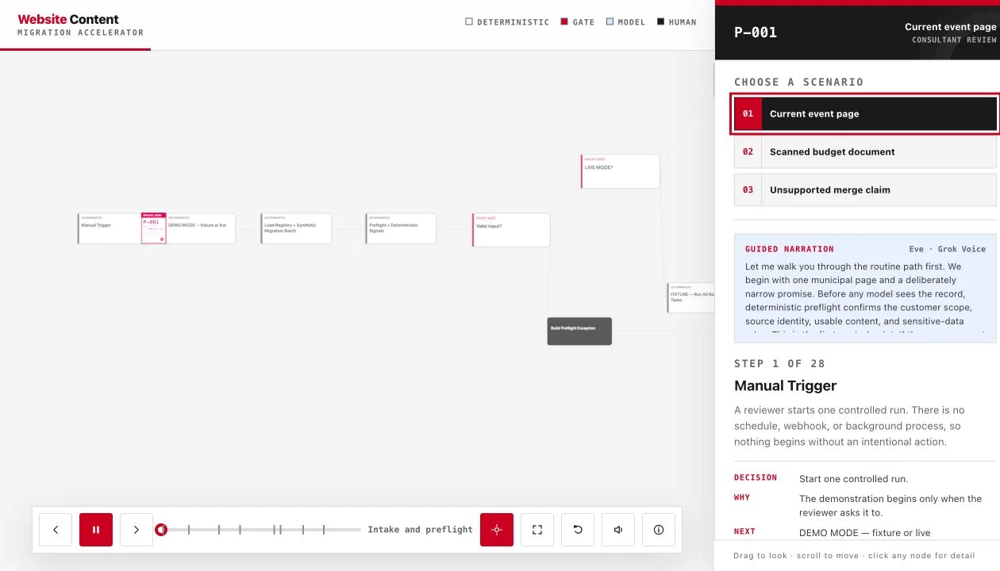

Embed
Work alongside the people who own the process and the outcome.

I embed with the people doing it—marketers, copywriters, financial researchers, developers, and operators—to understand where expertise gets trapped, repetitive work consumes attention, and handoffs or missing information slow everything down. Then I build the right intervention: an application people can use, an agent that can pursue a bounded objective, or a workflow that makes a repeatable process faster and more reliable.
The goal is not automation for its own sake. It is giving capable people better leverage while keeping human judgment, approval, and accountability exactly where they belong.
The useful AI opportunities are rarely visible from outside the room. They emerge from listening to the people closest to the work, mapping what actually happens, and separating genuine leverage from automation theater.
Work alongside the people who own the process and the outcome.
Map decisions, tools, handoffs, exceptions, and hidden expertise.
Find the recurring friction with enough value—and enough safety—to solve.
Choose the smallest application, agent, or workflow that can help.
Test with real work, visible evidence, edge cases, and human review.
Put it where the team already works, measure use, and improve it.
My advantage is not allegiance to one model or framework. It is the ability to move between domain experts and technical systems—translating the texture of their work into something useful, usable, and governed.
Research, SEO, competitive review, campaign production, analytics, and approvals often live in separate tools. I connect the work into systems that show teams what matters, what to do next, and what changed.
Evidence · Singularity SEO · Content Migration Accelerator · Book & Music MarketingTwenty-five years inside copywriting, branding, and campaign work gives me the context to encode voice, evidence, editorial standards, and review—not just generate more words faster.
Evidence · Agency689 Writing Systems · Sunset Marquis · Persona GovernanceFinancial research systems can monitor more evidence than a person can hold at once. The system organizes hypotheses, anomalies, and provenance; the analyst retains authority over interpretation and action.
Evidence · VRT2 / CLAW · COOK Correlation Engine · Single-Stock IntelligenceI work across product thinking, interface design, code, documentation, and deployment—building tools that expose their rules and fit the environment instead of forcing a team to work around the AI.
Evidence · Agent Exchange · Migration Accelerator · Agentic689 PlatformThe form follows the work. Sometimes people need a dependable interface. Sometimes a repeatable sequence. Sometimes a system that can pursue a bounded objective across tools. The distinction matters.
A place for people to perform AI-assisted work.
Best when the work needs a shared interface, visible state, structured inputs, comparison, explanation, or control. The AI is part of the product—not the whole product.
Examples · Singularity SEO · Agent Exchange · AuScanA bounded system that pursues an objective.
Best when the work crosses sources or tools, requires iteration, or benefits from continuous monitoring. Authority, stopping conditions, verification, and escalation are designed in from the start.
Examples · VRT2 / CLAW · BookLite · Market IntelligenceA repeatable process made faster and more reliable.
Best when the steps are known, the handoffs are painful, and consistency matters. AI assists where judgment is useful; deterministic checks and human approvals hold the line elsewhere.
Examples · Content Migration · Writing Systems · Campaign Production“Human in the loop” should describe an actual operating design, not a reassurance added at the end. The consequential decisions need named owners, visible evidence, clear checkpoints, and a way back.
Models and frameworks are selected to fit the work. The operating principles stay consistent.
Skill files and Markdown guardrails turn domain knowledge into a repeatable operating layer. They hold models to the team’s process: rules, evidence standards, voice, exceptions, and review gates. These four show how expertise can travel without losing its constraints.
The operating voice for Sunset Marquis. Speaker, pillars, banned moves, fact rules, and channel guidance that keep AI-drafted copy on brand and accurate. The same system behind the hotel’s campaigns.
A playbook for building an AI-native company. MTP constitution, agent fleet, workflow interfaces, live dashboards, governance, and unit economics, from idea to operating model.
A disciplined system for fundable proposals. Funder fit, evidence labels on every claim, reconciled budgets, portal-ready answers, and a human review gate. Never fabricate, never submit.
Turns a working prototype into a launchable product. A 13-layer readiness scorecard, P0/P1/P2 triage, security gates, and a hard definition of done. A working demo is not a finished product.
Production products, public betas, open-source systems, and research prototypes. Each begins with a concrete problem, exposes its operating logic, and keeps high-risk capabilities gated.
Governed AI Workflow
Evidence IDs · Human Authority
Three Guided Voice-Overs

Launch the guided demo →Website migrations mix current pages, scanned documents, duplicates, conflicting evidence, and recommendations that require accountable review.
A controlled workflow routes each record through deterministic intake, extraction, retrieval, disposition, ambiguity analysis, independent verification, authority gates, human review, and final audit output.
Choose from three sample workflows. A polished voice-over walks through every decision, safeguard, model handoff, and human checkpoint while the record moves through the live 3D graph.
Models extract, retrieve, recommend, and verify. Deterministic controls validate the evidence. Humans retain authority over every consequential decision, and the demo performs zero public writes.
WordPress SEO · ChatGPT App
Competitive Review · AIO
GSC + Live Rank Tracking


 Verified measurement credential
Google Analytics Certification (2026)
GA4 reporting, conversion measurement, attribution, audience insight, and Search Console-connected SEO/AIO progress tracking.
Verify credential →
Verified measurement credential
Google Analytics Certification (2026)
GA4 reporting, conversion measurement, attribution, audience insight, and Search Console-connected SEO/AIO progress tracking.
Verify credential →
Small teams need SEO that works for classic search and AI answer systems, but the work usually fragments across plugins, keyword tools, spreadsheets, analytics dashboards, competitor research, and someone guessing what to change next. WordPress can publish metadata. It rarely tells you what matters, what competitors are doing, what AI systems need to understand, or whether the work is actually moving.
Singularity SEO turns ChatGPT into the control room for a connected WordPress site. The plugin exposes managed pages, rendered metadata, technical health, setup state, reports, proposal queues, change history, Google Search Console visibility, and live search ranking checks. ChatGPT uses that context to audit the site, study the competitive field, build page-level SEO and AIO recommendations, and explain the next move in plain English.
Connect WordPress, verify the site, link the customer/site ID in the Singularity SEO ChatGPT app, then run a read-only baseline before any public change. From there the system can review competitors, choose focused keyword lanes, produce one governed full-site batch proposal, apply approved updates, track ranking and search visibility, and preserve rollback-ready change IDs.
The WordPress plugin owns the site-side dashboard, verification state, metadata overrides, report surfaces, and restore points. The ChatGPT app owns analysis and orchestration. That split keeps public site changes governed: read-only work is fast, proposal generation is explicit, apply actions require approval, and protected operating logic, credentials, and proprietary SEO guidance stay out of public tools.
The product sells the promise clients actually care about: a site that is easier for Google, AI answer engines, and real buyers to understand, with progress tracked through connected search data instead of guesswork.
Singularity SEO is positioned as AI-managed SEO infrastructure, not a ranking guarantee. The important design choice is governance: public WordPress changes are proposed, reviewed, applied after approval, measured through search visibility, and kept rollback-ready.
Agent-Native Marketplace API
Discovery · Negotiation · Trade Records
Assurance-Tiered Policy

AI agents can discover services and negotiate work, but an open marketplace needs identity, policy, reputation, dispute handling, and explicit limits before money or fulfillment enters the loop.
Agent Exchange is an assurance-tiered marketplace where verified agents can publish permitted inventory, search listings, negotiate offers, record trade outcomes, and build reputation through a machine-readable API.
A Node.js service exposes JSON and MCP interfaces, Ed25519 agent authentication, idempotent trade states, best offers, counteroffers, partial fills, rate limits, moderation controls, and an admin audit surface.
Free beta is live. Agents can register, list, negotiate, and record external-or-free settlement outcomes. Payment processing, custody, and smart-contract escrow stay behind deliberate feature gates.
The proof is not transaction volume. It is the product judgment to make identity, policy, auditability, and bounded authority part of the core design.
These systems move across writing, market intelligence, book marketing, and geospatial research. The domains change; the discipline does not: explicit rules, bounded authority, and human control over consequential decisions.
Brand Voice · RAG · Campaign AI
Sunset Marquis · Agency689
Traveler Guitar
Agency work creates constant demand for strong first drafts across email, banners, ad creative, landing pages, and social copy, with zero tolerance for voice drift. Generic AI output is the enemy. Volume without precision just produces more wrong work faster.
Brand context files, RAG-retrieved voice samples, SKILL.md governance, and persona specifications are assembled before any draft is generated. The system produces multiple first drafts, then routes them through a standards AI for quality and voice checks before anything reaches a human for approval.
Context ingestion → multi-draft generation → standards-AI critique loop → Telegram approval routing → human edit and publish. Outputs span email campaigns, banner copy, landing pages, ad creative, campaign concepts, and social posts. Nothing ships without human sign-off.
Sunset Marquis: high-frequency promotional and email copy inside a brand voice that took years to build. Agency689: proposals generated from discovery notes and project requirements, structured against years of precedent. Traveler Guitar: systems thinking extended into visual ideation, creating campaign worlds where the product lives without losing the brand's sense of adventure.
Used daily across Agency689 client work. The practical version of AI-assisted creative: faster iteration, tighter review loops, and human approval before anything publishes.
Stock Intelligence Agent
27 Streams · 23 Hypotheses
Kill-Switch Architecture


Markets generate data at a pace no individual analyst can track. EDGAR filings, earnings transcripts, analyst revisions, macroeconomic feeds, and price signals all move simultaneously. Manual synthesis lags. Bad signals with high weights cause outsized damage. A system without governance is worse than no system at all.
Node.js + SQLite backbone. Claude Haiku handles routine daily reviews; Claude Sonnet handles advanced analysis. Ingests Finnhub, EDGAR, earnings transcripts, analyst revisions, and macro feeds daily. Claude synthesizes everything into structured intelligence briefs. Signal weights are automatically adjusted based on observed hit rates over time.
Every signal change moves through five verification states: UNVERIFIED → SYNTAX_OK → SQL_VERIFIED → RUNTIME_VERIFIED → PRODUCTION_VERIFIED. New signals receive 0.50× weight until proven. Sub-55% hit rates (n=15) trigger automatic deactivation. A 20% drawdown fires a system-wide kill-switch. Nothing trades automatically.
Launchd scheduling on macOS. Historical backfill from 2022-present (162,439+ price rows). Six hypothesis tiers: fundamentals, peer dynamics, AI infrastructure, VRT-specific factors, macroeconomics, and emerging research. COMPOSITE_BULL averages +3.65% return over 3-day holds. Everything is logged, versioned, and auditable. The changelog reads like a system's operating history.
The transferable design pattern: ingestion, hypothesis testing, composite scoring, human review, audit trail, continuous improvement. The SSIA white paper documents the full architecture.
VRT2 and the SSIA white paper are included as technical architecture and systems-design samples, not as investment advice. The S1_LAG hit rate and COMPOSITE_BULL returns are backtested figures, not guarantees of future performance.
Governed Book Marketing
6 Platforms · Claude Brain
Selectable Autonomy

Indie authors need consistent multi-channel presence. Platform-native copy for Reddit, X, Instagram, Facebook, Goodreads, and KDP all have different voice expectations, character limits, and community norms. Maintaining all six manually is a second job. Generic AI copy, posted without human review, does more damage than nothing.
A single Claude brain reads book metadata (title, author, target audience, ASIN) and generates platform-specific copy for all six channels in one run. OAuth2 and OAuth 1.0a handle platform authentication server-side. No credentials hit the frontend. KDP ranking data feeds back in via Rainforest API or CSV upload for attribution learning.
Local Node.js server with a browser dashboard. Single HTML frontend, single server backend, no build step required. Server health checks show which channels are live. Attribution tracking identifies which content and which channels convert to sales, then feeds those learnings back into the next generation cycle.
BookLite is the open-source Lite release of the internal Agentic689 book and music marketing system. It runs one book, one author voice, one Claude brain, and posts to six platforms. The full production version handles multiple titles, multi-artist configurations, and cross-platform attribution at scale. The Lite release strips to the essentials so the architecture is readable.
Built on the Anthropic Claude Agent SDK. MIT licensed. The white paper covers the full internal architecture the Lite version was derived from, including the multi-title production system.
AI Gold Prospectivity
Claude Vision · 5 Sensors
USGS MRDS Validated


Traditional mineral exploration is expensive, slow, and requires specialist teams in the field. Satellite imagery covering every inch of Earth's surface is freely accessible but opaque to non-specialists. The gap between available data and actionable prospectivity intelligence is a systems problem, not a data problem.
AuScan trains Claude Vision on the spectral and structural signatures of ten world-class gold deposits: Witwatersrand, Carlin Trend, Kalgoorlie, and others. Multi-sensor data (NASA EMIT hyperspectral, Landsat thermal, ASTER mineral mapping, Sentinel-2 vegetation indices, and ESRI RGB) is assembled into terrain fingerprints for each deposit.
In testing, the system scored a HIGH-confidence hit at 42.609°N, −119.299°W, Oregon's Pueblo Mining District, a documented former gold producer. Cross-referenced against the USGS Mineral Resources Data System. Search grids are configurable from 2×2 to 5×5 across 10–100 mile radii. Patterns and results persist across sessions.
React-based browser application running in a Claude.ai artifact environment. Single-endpoint design with no CORS and no separate auth layer. Browser-native storage for session persistence. USGS MRDS integration via Claude's knowledge base for cross-referenced validation. Configurable search parameters allow rapid iteration across different regions and deposit types.
The transferable insight: domain expertise can be distilled into a vision system that scales to any geographic target. The white paper covers the full methodology, sensor pipeline, and validation results.
The fastest way to understand what these systems can actually do is to put a real objective on the line, build through the uncertainty, and keep the full path of reasoning available for inspection.
F = ma → Quantum Gravity
18 Days · 38 References
One Unbroken Thread


The Agentic689 thesis says you learn what these models can actually make by making them make it, against a real objective, with a real outcome on the line. Donkey on the Edge took that to the largest objective available: go from F = ma to the open problems of quantum gravity and produce something the field has not seen.
On April 23, 2026, I asked Claude where to start with quantum mechanics. No physics degree behind the question. The conversation ran in a single unbroken thread from Newtonian mechanics to the frontier. Eighteen days. Thirty-eight reference documents written from scratch along the way. Wrong turns kept on the page next to the right ones.
By May 11 the work had produced a paper, "Complexity-Sensitive Complementarity in Non-Isometric Holographic Codes." Five results, three theorems, thirty-eight references, and one integer-valued exponent gap that nobody has yet explained. The integer is exactly one. The paper is headed for the arXiv.
The whole path of study is mapped. Thirty-eight reference documents from Physics 101 to quantum gravity, drawn as a Victorian railway chart. Thirty-eight stations on six lines. The Quantum Trunk is the spine, the Classical Branch runs alongside, the Gravitational Spur descends to the frontier, and every route terminates at Paper I. The entire physics curriculum compressed into one chart you read like a transit map. Click any station, read that document.
The site is built as a Victorian scientific journal because that is the tradition the work belongs to. Static Astro build. No tracking, no analytics, no cookies. Claude of Anthropic credited as computational collaborator.
Additional workflows & agents


The production-scale predecessor to BookLite. Multi-title, multi-artist, multi-channel closed loops for KDP titles and music releases. Platform-native copy for Reddit, Instagram, Facebook, X, and TikTok. Real sales and streams tracked through platform APIs. Attribution feedback, channel re-weighting every cycle, and human approval queues between every action.
Validated persona scaffolding with SKILL.md governance. Produces structured persona specifications with hard governance rules and voice constraints that define what the AI can say, how it can say it, and where it must defer to human judgment. Used for brand persona development, editorial governance, and AI-assisted copy systems across Agency689 client work.
Multi-asset anomaly correlation engine with dashboard UI. Takes complex cross-market signal data and presents it in a form that supports human decision-making. Proof of systems thinking applied to data-to-narrative design: the goal is a human making a better-informed call, not a system making a call on their behalf.
The studio's own website, designed, written, coded, and shipped by one of the agents. Single self-contained HTML file. Cloudflare Pages Function for the contact form. No framework, no build step. Deploys in five seconds from the terminal with one command. The storefront is itself an honest sample of the work these systems produce.
I am most useful where domain experts can feel the friction but need someone who can translate it into a working AI system—then carry that system through prototyping, testing, governance, adoption, and improvement.
Talk about the work →